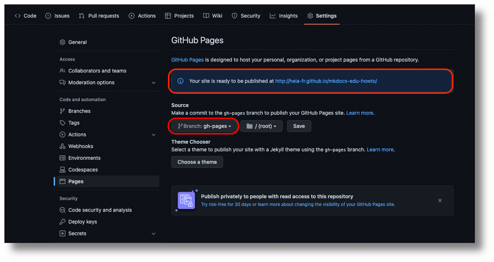

Publication du site sur Internet
Pour rendre votre site disponible sur Internet, vous avez plusieurs solutions :
- GitHub Pages
- GitLab Pages
- Netlify
- Vercel
- et bien d’autres encore…
Je vais décrire ici la méthode pour utiliser les GitHub Pages, mais toutes les options ci-dessus sont possible avec MkDocs.
Pour utiliser GitHub Pages, vous devez héberger votre projet dans un dépôt git de GitHub.
Créez ensuite un dossier .github à la racine de votre projet
Ajoutez-y les fichiers suivants pour définir l’action Mkdocs edu builder:
# action.yml
name: 'Mkdocs edu builder'
description: 'Builds a Mkdocs website for HEIA-FR'
inputs:
site-dir:
description: 'public build directory'
required: false
default: '../public'
config-file:
description: 'config file'
required: false
default: 'config/mkdocs.yml'
runs:
using: 'docker'
image: 'Dockerfile'
args:
- ${{ inputs.site-dir }}
- ${{ inputs.config-file }}
FROM python:bullseye
# Install additional software
RUN apt-get update && \
export DEBIAN_FRONTEND=noninteractive && \
apt-get -y install --no-install-recommends \
ghostscript \
imagemagick \
zip
# Make sure that ImageMagick can convert PDF to images
RUN sed -i '/disable ghostscript format types/,+6d' \
/etc/ImageMagick-6/policy.xml
# Install Poetry
RUN pip install poetry
# Install entrypoint
COPY entrypoint.sh /entrypoint.sh
RUN chmod +x /entrypoint.sh
ENTRYPOINT ["/entrypoint.sh"]
#!/bin/bash -l
set -o errexit
set -o pipefail
set -o nounset
# set -o xtrace
site_dir="${1:-public}"
config="${2:-config/mkdocs.yml}"
# Install mkdocs from .devcontainer in a sub-shell
cp -a .devcontainer/mkdocs-edu /
(cd /mkdocs-edu && poetry config virtualenvs.create false && poetry install)
python --version
mkdocs --version
mkdocs build --clean --config-file ${config} --site-dir ${site_dir}
Ainsi que le fichier suivant pour le workflow :
name: publish-websites
on:
workflow_dispatch:
push:
branches:
- 'main'
tags:
- 'v*'
jobs:
build-and-push-pages:
runs-on: ubuntu-latest
permissions:
contents: write
steps:
- name: Checkout repository
uses: actions/checkout@v3
- name: Build mkdocs site
uses: ./.github/actions/mkdocs-edu
- name: Deploy
uses: peaceiris/actions-gh-pages@v3
if: github.ref == 'refs/heads/main'
with:
github_token: ${{ secrets.GITHUB_TOKEN }}
publish_dir: ./public
Lors du prochain push avec ces nouveaux fichiers, l’action de github créra une nouvelle branche avec le contenu de votre site statique.
Afin de publier cette branche dans GitHub Pages, allez dans Settings → Pages et choisissez la branche gh-pages comme source de votre site :

Après avoir sauvé cette configuration, votre site devrait être publié à l’adresse que vous pouvez voir sur la page des settings.
Grâce aux GitHub Actions, votre site sera automatiquement publié lors de chaque push de la branche main du projet ou lors du push d’un tag commençant par “v”.